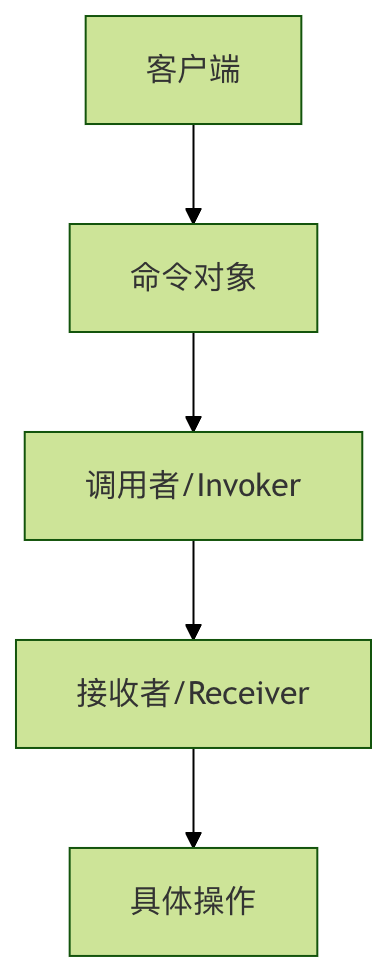
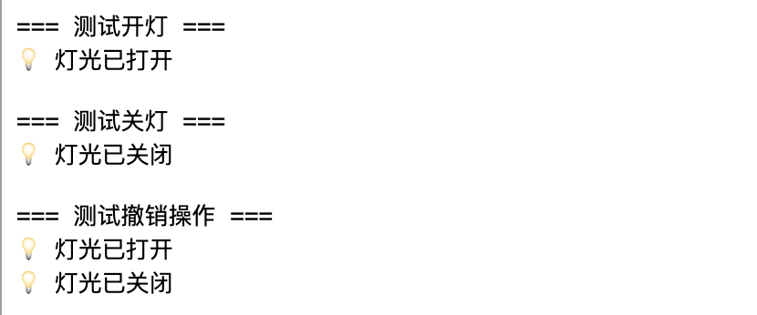

Python コマンドパターン
コマンドパターンは、リクエストをオブジェクトにカプセル化する振る舞いデザインパターンです。これにより、異なるリクエストでクライアントをパラメータ化できます。簡単に言うと、コマンドパターンは操作（ファイルを開く、データを保存するなど）を独立したオブジェクトにラップします。データと同じように操作を扱えるようにします。
生活の中のたとえ
レストランの注文の流れを想像してみてください：
- 客（クライアント）はシェフがどのように料理するかを知る必要はありません
- ウェイター（呼び出し側）注文を受け取りますが、自分では調理しません
- 注文（コマンドオブジェクト）は具体的な料理の情報を含みます
- シェフ（受け取り側）は注文に基づいて具体的な調理操作を実行します
このように役割が明確に分かれたパターンは、現実の生活におけるコマンドパターンの表れです。
なぜコマンドパターンが必要か
従来方式の限界
従来のプログラミングでは、通常はオブジェクトのメソッドを直接呼び出します：
例
def turn_on(self):
print("電気がつきました")
def turn_off(self):
print("電気が消えました")
# 直接呼び出し
light = Light()
light.turn_on()
light.turn_off()
この方法にはいくつかの問題があります：
- 密結合：呼び出し側は受け取り側の具体的なインターフェースを知っている必要がある
- 拡張が難しい：新しい機能を追加するには既存のコードを変更する必要がある
- アンドゥ/リドゥをサポートしない：操作の実行後に元に戻せない
コマンドパターンの利点

コマンドパターンは中間層（コマンドオブジェクト）を導入することで上記の問題を解決し、以下を提供します：
- 疎結合：呼び出し側と受け取り側の間に直接の依存関係がない
- 拡張性：新しいコマンドを簡単に追加できる
- アンドゥ/リドゥをサポート：操作履歴を記録できる
- キューのサポート：コマンドをキューに入れて遅延実行できる
コマンドパターンの核心コンポーネント
基本構造
コマンドパターンには4つの核心的な役割があります：
| 役割 | 責務 | 例 |
|---|---|---|
| Command（コマンドインターフェース） | 操作を実行するためのインターフェースを宣言する | execute(), undo() |
| ConcreteCommand（具体コマンド） | コマンドインターフェースを実装し、受け取り側をバインドする | LightOnCommand, LightOffCommand |
| Receiver（受け取り側） | 操作の実行方法を知っている | Light, TV |
| Invoker（呼び出し側） | コマンドを保存して実行する | RemoteControl |
完全なコード例
基本実装
スマートホームの照明制御の例を通して、コマンドパターンを理解しましょう：
例
from typing import List
# 1. コマンドインターフェース
class Command(ABC):
@abstractmethod
def execute(self):
pass
@abstractmethod
def undo(self):
pass
# 2. 受け取り側 - 照明デバイス
class Light:
def turn_on(self):
print("💡 照明がオンになりました")
def turn_off(self):
print("💡 照明がオフになりました")
# 3. 具体コマンド - 照明をオンにするコマンド
class LightOnCommand(Command):
def __init__(self, light: Light):
self.light = light
def execute(self):
self.light.turn_on()
def undo(self):
self.light.turn_off()
# 4. 具体コマンド - 照明をオフにするコマンド
class LightOffCommand(Command):
def __init__(self, light: Light):
self.light = light
def execute(self):
self.light.turn_off()
def undo(self):
self.light.turn_on()
# 5. 呼び出し側 - リモコン
class RemoteControl:
def __init__(self):
self.command = None
self.history: List[Command] = []
def set_command(self, command: Command):
self.command = command
def press_button(self):
if self.command:
self.command.execute()
self.history.append(self.command)
def press_undo(self):
if self.history:
last_command = self.history.pop()
last_command.undo()
# クライアントコード
if __name__ == "__main__":
# デバイスを作成
living_room_light = Light()
# コマンドを作成
light_on = LightOnCommand(living_room_light)
light_off = LightOffCommand(living_room_light)
# リモコンを作成
remote = RemoteControl()
# 照明をオンにするテスト
print("=== 照明オン テスト ===")
remote.set_command(light_on)
remote.press_button()
# 照明をオフにするテスト
print("\n=== 照明オフ テスト ===)
remote.set_command(light_off)
remote.press_button()
# アンドゥをテスト
print("\n=== アンドゥ操作のテスト ===)
remote.press_undo() # 照明オフをアンドゥ、照明オンになるはず
remote.press_undo() # 照明オンをアンドゥ、照明オフになるはず
実行結果：

応用の例
複数デバイス対応の万能リモコン
先ほどの例を拡張して、複数のデバイスをサポートする万能リモコンを作成しましょう：
例
class TV:
def __init__(self, location: str):
self.location = location
self.is_on = False
self.volume = 50
def turn_on(self):
self.is_on = True
print(f"📺 {self.location}テレビがオンになりました")
def turn_off(self):
self.is_on = False
print(f"📺 {self.location}テレビがオフになりました")
def set_volume(self, volume: int):
self.volume = volume
print(f"📺 {self.location}テレビの音量を {volume} に設定しました")
# テレビ関連コマンド
class TVOnCommand(Command):
def __init__(self, tv: TV):
self.tv = tv
self.previous_volume = 50
def execute(self):
self.previous_volume = self.tv.volume
self.tv.turn_on()
def undo(self):
self.tv.turn_off()
self.tv.volume = self.previous_volume
class TVVolumeUpCommand(Command):
def __init__(self, tv: TV):
self.tv = tv
self.previous_volume = 50
def execute(self):
self.previous_volume = self.tv.volume
self.tv.set_volume(min(100, self.tv.volume + 10))
def undo(self):
self.tv.set_volume(self.previous_volume)
# マクロコマンド - 複数のコマンドを一括実行
class MacroCommand(Command):
def __init__(self, commands: List[Command]):
self.commands = commands
def execute(self):
for command in self.commands:
command.execute()
def undo(self):
# 逆順でアンドゥ
for command in reversed(self.commands):
command.undo()
# 改良版リモコン
class AdvancedRemoteControl:
def __init__(self, slot_count: int = 4):
self.on_commands: List[Command] = [None] * slot_count
self.off_commands: List[Command] = [None] * slot_count
self.history: List[Command] = []
def set_command(self, slot: int, on_command: Command, off_command: Command):
self.on_commands[slot] = on_command
self.off_commands[slot] = off_command
def press_on_button(self, slot: int):
if self.on_commands[slot]:
self.on_commands[slot].execute()
self.history.append(self.on_commands[slot])
def press_off_button(self, slot: int):
if self.off_commands[slot]:
self.off_commands[slot].execute()
self.history.append(self.off_commands[slot])
def press_undo(self):
if self.history:
last_command = self.history.pop()
last_command.undo()
# 上級リモコンのテスト
def test_advanced_remote():
print("=== 万能リモコンのテスト ===")
# デバイスを作成
living_room_light = Light()
bedroom_tv = TV("寝室")
# コマンドを作成
light_on = LightOnCommand(living_room_light)
light_off = LightOffCommand(living_room_light)
tv_on = TVOnCommand(bedroom_tv)
tv_volume_up = TVVolumeUpCommand(bedroom_tv)
# マクロコマンドを作成 - シアターモード
cinema_mode = MacroCommand([light_off, tv_on, tv_volume_up])
# リモコンを設定
remote = AdvancedRemoteControl()
remote.set_command(0, light_on, light_off) # スロット0：照明制御
remote.set_command(1, tv_on, TVOnCommand(bedroom_tv)) # スロット1：テレビ制御
remote.set_command(2, cinema_mode, light_on) # スロット2：シアターモード
# さまざまな機能をテスト
print("\n1. 照明をオンにする:)
remote.press_on_button(0)
print("\n2. シアターモードを起動:)
remote.press_on_button(2)
print("\n3. 操作をアンドゥ:)
remote.press_undo()
if __name__ == "__main__":
test_advanced_remote()
コマンドパターンのパラメータとオプション
コマンドインターフェースの拡張
実際のアプリケーションでは、コマンドインターフェースを必要に応じて拡張し、さらに多くの機能を追加できます：
例
@abstractmethod
def execute(self):
"""コマンドを実行"""
pass
@abstractmethod
def undo(self):
"""コマンドをアンドゥ"""
pass
@abstractmethod
def redo(self):
"""コマンドをリドゥ"""
pass
@abstractmethod
def can_execute(self) -> bool:
"""コマンドが実行可能かどうかを確認"""
pass
@abstractmethod
def get_description(self) -> str:
"""コマンドの説明を取得"""
pass
コマンドキューと遅延実行
コマンドパターンはコマンドキューを自然にサポートしており、これは多くのシーンで非常に役立ちます：
例
def __init__(self):
self.queue: List[Command] = []
def add_command(self, command: Command):
self.queue.append(command)
def process_commands(self):
while self.queue:
command = self.queue.pop(0)
if command.can_execute():
command.execute()
def clear(self):
self.queue.clear()
実践演習
演習1：エアコン制御システムの実装
エアコン制御システムのコマンドパターンを実装してみましょう：
例
class AirConditioner:
def __init__(self):
self.temperature = 26
self.is_on = False
def turn_on(self):
# エアコンをオンにする実装
pass
def turn_off(self):
# エアコンをオフにする実装
pass
def set_temperature(self, temp: int):
# 温度設定の実装
pass
# エアコン関連のコマンドクラスを実装
# AirConditionerOnCommand
# AirConditionerOffCommand
# TemperatureUpCommand
# TemperatureDownCommand
演習2：テキストエディタのアンドゥ機能の実装
テキスト入力とアンドゥ操作をサポートするシンプルなテキストエディタを作成します：
例
def __init__(self):
self.content = ""
def add_text(self, text: str):
# テキスト追加の実装
pass
def delete_text(self, length: int):
# テキスト削除の実装
pass
# テキスト編集コマンドの実装
# AddTextCommand
# DeleteTextCommand
よくある質問
Q: コマンドパターンはどのようなシーンに適していますか？
A:コマンドパターンは特に以下のシーンに適しています：
- 操作をパラメータ化する必要がある場合（例：ボタンに異なる機能をバインドする）
- アンドゥ/リドゥ機能をサポートする必要がある場合
- 操作をキューに入れて遅延実行する必要がある場合
- 操作ログを記録する必要がある場合
- トランザクション操作をサポートする必要がある場合
Q: コマンドパターンの欠点は何ですか？
A:主な欠点は次のとおりです：
- 大量のコマンドクラスが作成される可能性がある
- コードの複雑さが増す
- 単純な操作には過剰に感じられることがある
Q: コマンドパターンを使用するかどうかはどのように選びますか？
A:以下の点を考慮してください：
- 単純なメソッド呼び出しだけでよい場合は、コマンドパターンを使用しないでください
- アンドゥ/リドゥ機能が必要な場合は、強く推奨します
- システムが高度な疎結合を必要とする場合、コマンドパターンは良い選択です
- 操作のキューイングやログ記録が必要な場合、コマンドパターンは適しています
まとめ
コマンドパターンは操作をオブジェクトにカプセル化することで、呼び出し側と受け取り側の結合を疎結合にし、強力な拡張性を提供します。コードの複雑さは増しますが、アンドゥ/リドゥ、操作キュー、ログ記録などのシナリオでは、コマンドパターンは欠かせないデザインパターンです。
重要なポイント：
- コマンドパターンは「何をするか」と「誰が行うか」を分離します。
- アンドゥ、リドゥ、キューなどの高度な機能をサポートします。
- 新しいコマンドを簡単に拡張できます。
- GUIアプリケーション、トランザクションシステム、ゲーム開発で広く応用されています。
クリックしてノートを共有
ノートは本記事の内容の拡張である必要があります！
記事の投稿はこちらをクリック
登録招待コードの取得方法
ノートを共有する前にログインが必要です！
登録招待コードの取得方法